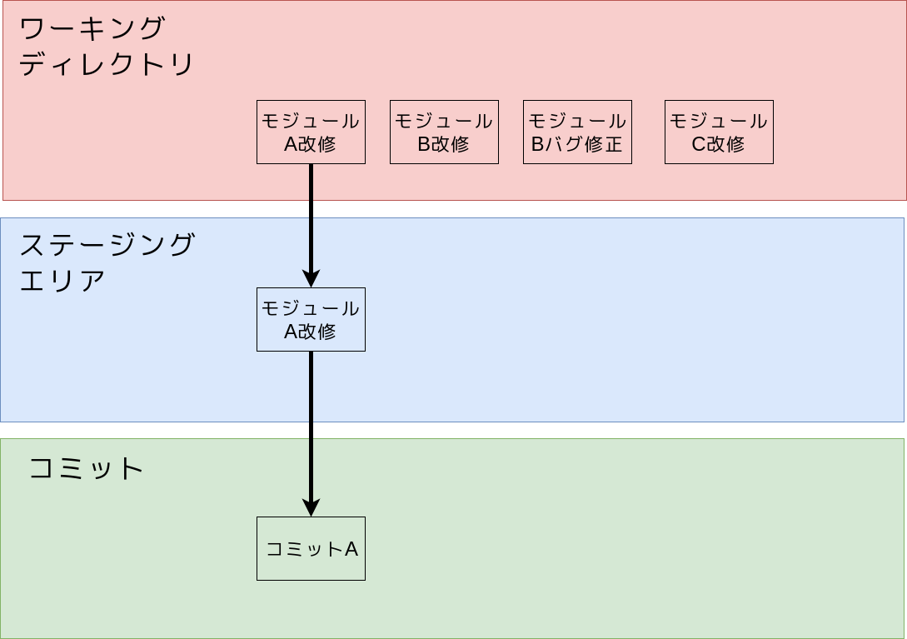
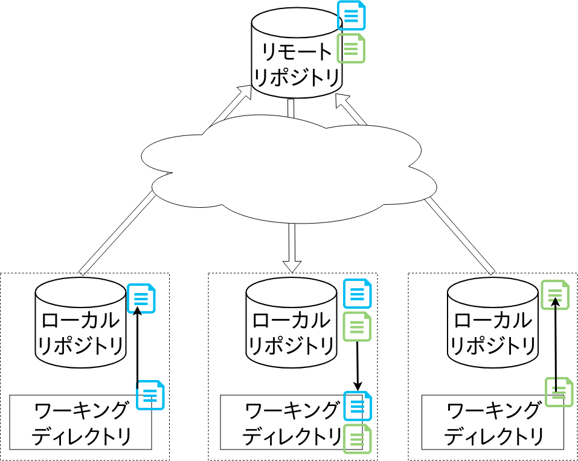
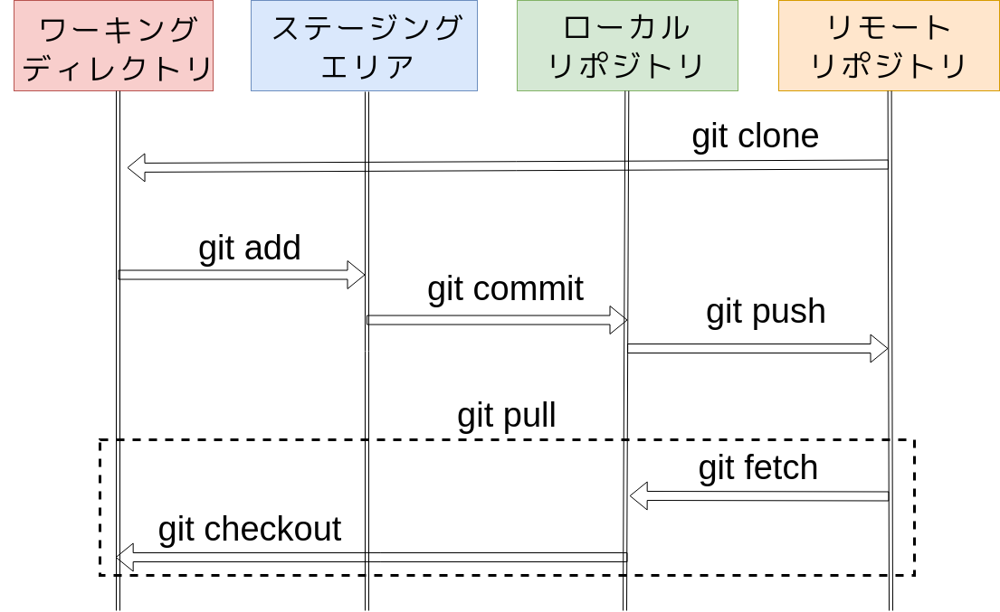

Git基礎
1. アーキテクチャ
1.1. 保存スペース
Gitはある時点におけるコミット(スナップショット)の保存，管理を行います．
Gitはプロジェクトに次の3つの保存スペースを設けており，それらをうまく使い分けながらコミットの管理を行います．
- ワーキングディレクトリ: 実際に作業をするディレクトリ
- ステージングエリア: インデックスと呼ばれる次にリポジトリに納めるべきファイルを収納する場所で，リポジトリへ保存する前の一時置き場
- (ローカル/リモート)リポジトリ: コミットを保存する場所で，Gitではリモートとローカルの2種類が存在
ちなみにステージングエリアが用意されている理由についてですが，これはコミットの粒度を管理するためにあります．
例えばあるプロジェクトでモジュールAとモジュールB，モジュールCにそれぞれ変更を加えたとしましょう．
これらをすべて一つのコミットにまとめてしまうのもよいですが，管理する都合上モジュール単位にコミットを分けたい場合もあります．
この際にモジュールAの改修部分だけステージングにあげてコミット

モジュールBの改修をステージングに上げる．
モジュールBのバグ修正をステージングにあげてコミット
モジュールCの改修部分だけステージングにあげてコミット
とするだけで3つのコミットに分割することが可能です．
このようにステージングエリアを使い分けることでコミットの粒度を調整し，変更の管理や追跡を容易にします．
1.2. 分散型
またGitは分散型のバージョン管理システムに分類されます．
各個人がローカル環境にワーキングディレクトリ，ステージングエリア，ローカルリポジトリを保有します．
共有のリモートリポジトリを用意し，手元のローカルリポジトリに保存されたコミットをプッシュ(アップロード)，ないしはフェッチ(ダウンロード)することで複数人でのコード管理を実現しています．

2. コミット管理のフロー
次の図にコミットがどのようなコマンドで各スペースを往来しているかを示しています．
「自分は今何をやっているんだっけ？」となることもあると思うので，そういったときはこの図を見返すといいかもしれません．

3. 実際に使う
次に実際にGitを使っていきましょう．
既にGitがインストール済みの環境があればそちらを使っていただいても構いませんが，環境がなければPlay with Dockerを使いましょう．
Play with Dockerでは初期からgitが入っているので直ぐに始められます．
またエディタはvimが入っていますが，emacsやnanoが使いたい人はapk update && apk add emacsなどで導入してください．
Play with DockerではEscキーが使えません！vimを使う人はEscの代わりにCtrl+cを使ってください！
3.1. 設定
Gitは誰が作成したコミットかを残します．
そのため自分が何者であるか，Gitに設定してあげましょう．
$ git config --global user.email "<GitHubに登録したメールアドレス>"
$ git config --global user.name "<GitHubのユーザ名>"
設定の反映を確認します．
# 一覧
$ git config --global -l
# 設定ファイルは$HOME/.gitcnfigに保存されている
$ cat $HOME/.gitconfig
直接ファイルの編集も可能ですが，基本的に$HOME/.gitconfigファイルはgit configコマンドを通して書き換えましょう．
3.2. ローカルリポジトリの用意
まずはローカルリポジトリ(以降，単にリポジトリとします)を作成しましょう．
リポジトリというと「コミットを保存する場所」と先に定義しましたが，一般的にプロジェクトのディレクトリそのものをリポジトリと表現することも多いです． ややこしいですが仕方ありません．
$ mkdir -p $HOME/workdir/first
$ cd $HOME/workdir/first
$ git init
# .git ディレクトリが表示されていれば成功です
$ ls -a
これで$HOME/workdir/firstがリポジトリになりました．
リポジトリの中身を先程の用語と対応付けると，このようになります．
- ワーキングディレクトリ = リポジトリの.gitディレクトリ以外
- ステージングエリア = .gitディレクトリ配下
- コミット保存場所としてのリポジトリ = .gitディレクトリ配下
したがって.gitディレクトリを削除すると，そのリポジトリはGitの管理対象から外れます．
3.3. コミットまでの流れ
次にGitのリポジトリに必須のREADME(説明書)を作ります．
$ echo "# This Repository is My first repo." > README.md
では変更をコミットとして保存していきましょう．
# ステージングエリアに README.md の変更差分を追加
$ git add README.md
# ステージングエリアの変更差分をコミットとして残す
$ git commit -m "Add README.md"
# コミット履歴を確認
$ git log
git logコマンドの出力は以下のようになっていると思います．
> commit 7def8c99a189d50c64ea76baf5cfc51d0b4679ee (HEAD -> maste
r)
> Author: OriishiTakahiro <my-mail-addr@example.jp>
> Date: Tue Apr 9 13:04:46 2019 +0000
> Add README
それぞれの意味合いは次の通りです．
- commit: そのコミットを指すコミットID
- Author: コミット主
- Date: コミット作成時刻
- コミットコメント (-m オプションで指定した文字列)
以上がGitの主な流れです．
変更→add→commitの流れを繰り返していくことでワーキングディレクトリでの作業履歴を残していきます．
3.4. 状態の確認
git statusコマンドではリポジトリの各ファイルの状態を確認できます．
$ echo "hoge" > hoge.txt
$ echo "foo" > foo.txt
$ git add hoge.txt
# 各ファイルの状態確認
$ git status
git statusの出力はこんな感じになるはずです．
> On branch master
> Changes to be committed:
> (use "git reset HEAD <file>..." to unstage)
>
> new file: hoge.txt
>
> Untracked files:
> (use "git add <file>..." to include in what will be committed)
>
> foo.txt
出力の意味合いはそれぞれ
- Changes to be committed: ステージング済み，
git commitコマンドでコミットになる変更分 - Untracked files: ステージングにすら入っていない
3.5. ファイルの削除
gitで管理するプロジェクトのファイルを削除する場合に気をつけるべきことがあります．
# カレントディレクトリを指定することで配下全てをaddの対象にできます
$ git add .
$ git commit -m "Add foo bar"
ここで普通に
# ここのコマンドは実行しないでください！
$ rm hoge.txt
$ git add .
$ git commit -m "rm hoge"
としても，コミットにはhoge.txtの削除が反映されません．
git addコマンドでステージングエリアに登録されるのは修正か新規作成のみです．
ファイルを削除する際はgit rmコマンドを使いましょう．
$ git rm hoge.txt
$ git status
以下のように表示され，hoge.txtが削除されたことがステージングエリアに登録されていることがわかります．
> On branch master
> Changes to be committed:
> (use "git reset HEAD <file>..." to unstage)
>
> delet
コミットすればhoge.txtはリポジトリから消えます．
$ git commit -m "delete hoge"
ちなみに間違えてgit rmを使わずに削除してしまった場合は．git addに-Aオプションをつけて，git add . -Aとするとちゃんと反映されます．
3.6. 差分の確認
次にコミット間での変更差分を確認しましょう．
git diffコマンドを使うとコミット間での変更点が見られます．
ここまでのコマンドを全て実行していれば，git logとすると次のようになるはずです．
$ git log
> commit 40c83b581aac94128a69eef5ee765c6290c872dd (HEAD -> maste
r)
> Author: OriishiTakahiro <my-mail-addr@example.jp>
> Date: Tue Apr 9 13:29:19 2019 +0000
>
> delete hoge
>
> commit 0a4a2688320bb54991982e12203d391f27ae4108
> Author: OriishiTakahiro <my-mail-addr@example.jp>
> Date: Tue Apr 9 13:20:50 2019 +0000
>
> add foo bar
>
> commit 7def8c99a189d50c64ea76baf5cfc51d0b4679ee
> Author: OriishiTakahiro <my-mail-addr@example.jp>
> Date: Tue Apr 9 13:04:46 2019 +0000
>
> Add README.md
# コミットIDを指定して差分を見る
# (コミットIDは一意に特定できればいいので，最初の数桁で指定してもよい)
$ git diff 0a4a2 40c83b
出力は以下のようになります．
> diff --git a/hoge.txt b/hoge.txt
> deleted file mode 100644
> index 2262de0..0000000
> --- a/hoge.txt
> +++ /dev/null
> @@ -1 +0,0 @@
> -hoge
3.7. ブランチによる作業フローの分岐
Gitはブランチと呼ばれるコミットの流れを分岐/合流させる機能があります．
ブランチの使い方としては次のようなものがあります．
- 開発ブランチと製品ブランチという形で，最新ではないが確実に動くものを用意しておく
- 開発機能ごとにブランチを分けることで，それぞれのコミットを無駄に干渉させずに開発に集中できる
早速やっていきましょう，今回使用するのは以前説明に使った計算ツールGalcです．
package main
import (
"fmt"
"os"
sc "strconv"
)
func main() {
lhs, _ := sc.Atoi(os.Args[2])
rhs, _ := sc.Atoi(os.Args[3])
switch os.Args[1] {
case "add":
fmt.Println(lhs + rhs)
}
}
エディタでmain.goとして保存してください．
ここでインデントが崩れるかと思いますが， Go言語のランタイムには標準で整形ツールが付随しています．
(Play with DockerにはGo言語のランタイムがないので，DockerでGo言語の開発環境を動かします)
$ docker run -v ${PWD}:/go golang go fmt main.go
これで
早速実行してみましょう．
$ docker run -v ${PWD}:/go golang go run main.go add 1 2
$ git add main.go
$ git commit -m "Start galc project"
次にブランチを切って減算機能を追加しましょう．
# 減算ブランチの追加
$ git branch dev-sub
ここでgit branchとすると，現在作成されているブランチの一覧が出ます．
$ git branch
> dev-sub
> * master
dev-subブランチは先程作ったブランチで，masterブランチはデフォルトで用意されているブランチとなっています．
'*'が付いているものが自分がいるブランチなので，現在masterブランチにいるということになります．
では早速dev-subブランチに移動しましょう，git checkoutを使って移動します．
# dev-subブランチに移動
$ git checkout dev-sub
# 現在のブランチが切り替わっているか確認
$ git branch
main.goを書き換えて減算機能を追加してください．
package main
import (
"fmt"
"os"
sc "strconv"
)
func main() {
lhs, _ := sc.Atoi(os.Args[2])
rhs, _ := sc.Atoi(os.Args[3])
switch os.Args[1] {
case "add":
fmt.Println(lhs + rhs)
case "sub":
fmt.Println(lhs - rhs)
}
}
$ git add main.go
$ git commit -m "Add 'sub' command"
$ git log
次にmasterブランチに戻り，commitを確認しましょう．
$ git checkout master
$ git log
> commit 379d446c5114b37a088b769a5ced8bbe4d13afb6 (HEAD -> maste
r)
> Author: OriishiTakahiro <my-mail-addr@example.jp>
> Date: Tue Apr 9 13:59:53 2019 +0000
>
> Start galc project
>
> commit 40c83b581aac94128a69eef5ee765c6290c872dd
> Author: OriishiTakahiro <my-mail-addr@example.jp>
> Date: Tue Apr 9 13:29:19 2019 +0000
>
> delete hoge
>
> commit 0a4a2688320bb54991982e12203d391f27ae4108
> Author: OriishiTakahiro <my-mail-addr@example.jp>
> Date: Tue Apr 9 13:20:50 2019 +0000
>
> add foo bar
>
> commit 7def8c99a189d50c64ea76baf5cfc51d0b4679ee
> Author: OriishiTakahiro <my-mail-addr@example.jp>
> Date: Tue Apr 9 13:04:46 2019 +0000
>
> Add READM
先程のコミットはmasterブランチに反映されていませんね?
減算開発終了したので，dev-subのコミットをmasterにマージして変更をmasterに取り込みましょう．
# 'master'ブランチで行ってくださいね？
$ git merge dev-sub
# 減算の開発コミットがマージされていることを確認
$ git log
このように
- 機能開発用ブランチを作成
- コミットをたくさん作成
- 統合するブランチに機能開発用ブランチをマージ
のサイクルを繰り返していき，開発を行っていきます．
4. 関連ツール
GitにはCLIツールだけだけでなく，ビジュアライズされ，ボタンポチポチでできるGUIツールもあります．
またIDEやエディタのプラグインとして，Gitと連携する機能やプラグインが多く，そちらを使うのもいいと思います．
- IntelliJ IDEA
- Android Studio
- Atom
- Visual Studio Code